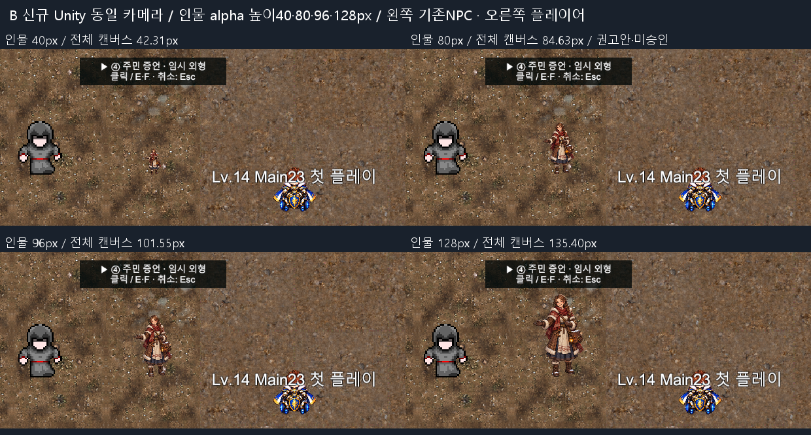
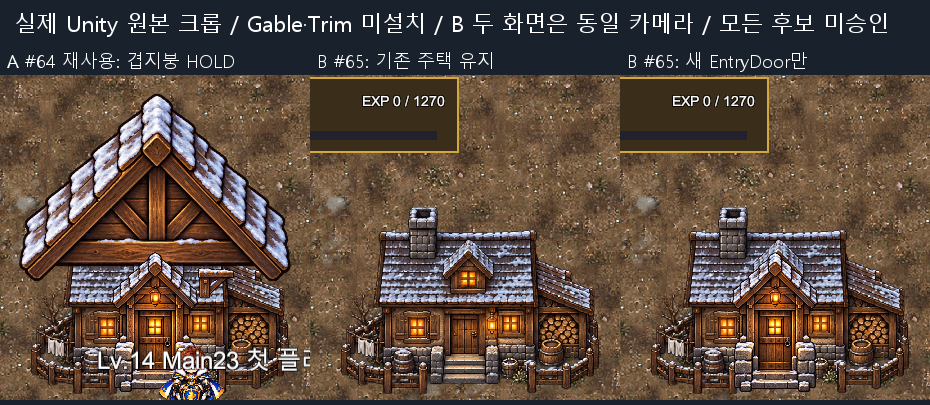
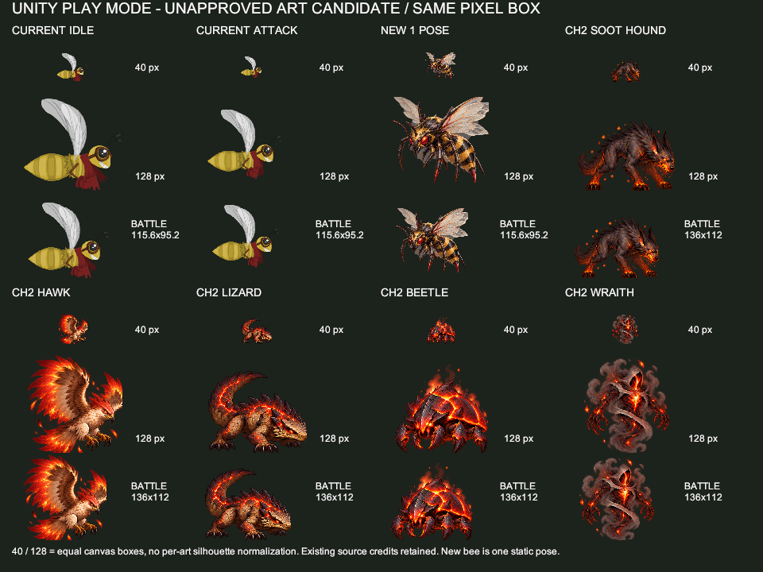

A 재사용 실제 Unity: 기존 내장간판 하나 KEEP_OLD
신규간판은 보관·미설치. 기존 내장간판 하나로 중복을 해소하고 휠체어 접근을 확인한 이전 근거입니다.

미승인 시안·본편 미적용입니다. B는 이번 새 alpha 인물높이40/80/96/128 비교, A는 원본SHA가 같은 이전 실제 Unity 근거 재사용입니다. 납품 ZIP의3장은 OFFLINE 자료이며 게임용PNG 변경은0입니다. 기존148/136/41/15 및 직전33/8 검사는 재실행하지 않았습니다.
추가 Unity23 PASS. 인물 높이80px 권고 = 전체캔버스84.63px (720px 기준). 이전 전체캔버스82px와 표기 기준이 다릅니다. 픽셀크기는 클릭해서 원본을 여세요. 최종미술승인은 바울 대표 결정입니다.
기존NPC 약82.3px와 비례가 가까운 인물80px 권고.96은 보조안,128은 큽니다.40은 읽기 어렵습니다.

판 내부 A/B는 이전 촬영 출처 라벨입니다. 이번에는 전체 판을 재사용합니다. 큰Gable/Trim 제외 후에도 작은눈지붕·문·계단 접합 HOLD. 기존 출입문KEEP 우선입니다.

신규간판은 보관·미설치. 기존 내장간판 하나로 중복을 해소하고 휠체어 접근을 확인한 이전 근거입니다.
40/128은 원래 공통캔버스 크기입니다. 새 오르나 alpha높이와 단위 정의가 다릅니다. 신규1포즈를 제품Battle에 교체하지 않았습니다. 기존10+10프레임 보존/모션제작0/방향·권리HOLD. 이전 원본을 그대로 재사용했습니다.

다음은 실제 Unity 증거가 아닙니다.